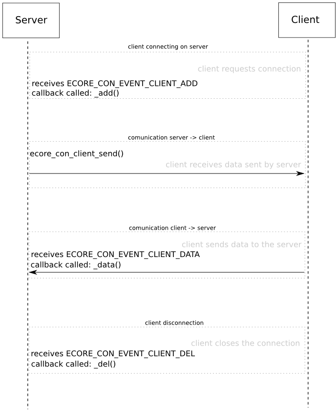

In this example we are going to create a server that listens for connections from clients through a TCP port.
You can get the full source code at ecore_con_server_simple_example.c.
We begin our example in the main function, to demonstrate how to setup things, and then go to the callbacks that are needed for it to run properly.
In the main function, after initializing the libraries, we use ecore_con_server_add() to startup the server. Look at the reference documentation of this function: it supports many types of server, and we are going to use #ECORE_CON_REMOTE_TCP (a TCP based server). Other arguments to this function are the address where we are listening on, the port, and a data pointer that will associate that data with the server:
main(void)
{
exit(1);
struct _Ecore_Con_Client Ecore_Con_Client
Used to provide legacy API/ABI compatibility with non-Eo applications.
Definition: Ecore_Con.h:308
ECORE_CON_API int ecore_con_init(void)
Initializes the Ecore_Con library.
Definition: ecore_con.c:68
struct _Ecore_Con_Server Ecore_Con_Server
Used to provide legacy API/ABI compatibility with non-Eo applications.
Definition: Ecore_Con.h:294
ECORE_CON_API Ecore_Con_Server * ecore_con_server_add(Ecore_Con_Type type, const char *name, int port, const void *data)
Creates a server to listen for connections.
Definition: ecore_con_legacy.c:1696
EAPI int ecore_init(void)
Sets up connections, signal handlers, sockets etc.
Definition: ecore.c:230
EINA_API int eina_init(void)
Initializes the Eina library.
Definition: eina_main.c:291
Type for a generic double linked list.
Definition: eina_list.h:318
Notice that we are listening only on 127.0.0.1, which is the internal loopback interface. If the server needs to listening on all of its ips, use 0.0.0.0 instead.
We also need to set event handlers to be called when we receive any data from the clients, when a new client connects to our server, or when a client disconnects. These callbacks are:
ECORE_CON_API int ECORE_CON_EVENT_CLIENT_ADD
A client has connected to the server.
Definition: ecore_con_legacy.c:157
ECORE_CON_API int ECORE_CON_EVENT_CLIENT_DEL
A client has disconnected from the server.
Definition: ecore_con_legacy.c:158
ECORE_CON_API int ECORE_CON_EVENT_CLIENT_DATA
A client connected to the server has sent data.
Definition: ecore_con_legacy.c:166
Eina_Bool(* Ecore_Event_Handler_Cb)(void *data, int type, void *event)
A callback used by the main loop to handle events of a specified type.
Definition: Ecore_Common.h:603
Ecore_Event_Handler * ecore_event_handler_add(int type, Ecore_Event_Handler_Cb func, const void *data)
Adds an event handler.
Definition: ecore_events.c:13
More details about what these callbacks do will be given later.
Now, before running the main loop, we also want to set some limits to our server. To avoid it to be overloaded with too many connections to handle, we are going to set a maximum of 3 clients connected at the same time. This number is used just to demonstrate the API. A good number to be used here would need to be determined by tests done on the server, to check the load supported by it.
Any other client trying to connect to this server, after the limit is reached, will wait until one of the connected clients disconnect and the server accepts the new connection.
Another important thing to do is setting a timeout, to avoid that a client hold a connection for too long without doing anything. This timeout will disconnect the idle client, allowing that other clients that may be waiting to connect finally can do it.
Then we just start the main loop:
ECORE_CON_API void ecore_con_server_client_limit_set(Ecore_Con_Server *svr, int client_limit, char reject_excess_clients)
Sets a limit on the number of clients that can be handled concurrently by the given server,...
Definition: ecore_con_legacy.c:2267
ECORE_CON_API void ecore_con_server_timeout_set(Ecore_Con_Server *svr, double timeout)
Sets the default time after which an inactive client will be disconnected.
Definition: ecore_con_legacy.c:2284
void ecore_main_loop_begin(void)
Runs the application main loop.
Definition: ecore_main.c:1311
After exiting the main loop, we print the list of connected clients, and also free the data associated with each respective client. This data was previously associated using ecore_con_client_data_set():
printf("Clients connected to this server when exiting: %d\n",
{
}
ECORE_CON_API const char * ecore_con_client_ip_get(const Ecore_Con_Client *cl)
Gets the IP address of a client that has connected.
Definition: ecore_con_legacy.c:739
ECORE_CON_API void * ecore_con_client_data_get(Ecore_Con_Client *cl)
Retrieves the data associated with the given client.
Definition: ecore_con_legacy.c:732
ECORE_CON_API const Eina_List * ecore_con_server_clients_get(const Ecore_Con_Server *svr)
Retrieves the current list of clients.
Definition: ecore_con_legacy.c:2277
static unsigned int eina_list_count(const Eina_List *list)
Gets the count of the number of items in a list.
#define EINA_LIST_FOREACH(list, l, _data)
Definition for the macro to iterate over a list.
Definition: eina_list.h:1415
Then before exiting we show the total uptime of the server:
printf("Server was up for %0.3f seconds\n",
ECORE_CON_API double ecore_con_server_uptime_get(const Ecore_Con_Server *svr)
Checks how long a server has been connected.
Definition: ecore_con_legacy.c:2405
Now let's go back to the used callbacks.
The first callback, _add, is registered to the event ECORE_CON_EVENT_CLIENT_ADD, which will be called whenever a client connects to the server.
This callback will associate a data structure to this client, that will be used to count how many bytes were received from it. It also prints some info about the client, and send a welcome string to it. ecore_con_client_flush() is used to ensure that the string is sent immediately, instead of being buffered.
A timeout for idle specific for this client is also set, to demonstrate that it is independent of the general timeout of the server.
Before exiting, the callback will display a list of all clients still connected to this server. The code for this callback follows:
{
char welcome[] = "hello! - sent from the server";
struct _Client *client = malloc(sizeof(*client));
client->sdata = 0;
printf("Client with ip %s, port %d, connected = %d!\n",
printf("Clients connected to this server:\n");
ECORE_CON_API void ecore_con_client_timeout_set(Ecore_Con_Client *cl, double timeout)
Sets the time after which the client will be disconnected when inactive.
Definition: ecore_con_legacy.c:697
ECORE_CON_API Ecore_Con_Server * ecore_con_client_server_get(const Ecore_Con_Client *cl)
The server the client is connected to.
Definition: ecore_con_legacy.c:753
ECORE_CON_API int ecore_con_client_send(Ecore_Con_Client *cl, const void *data, int size)
Sends the given data to the given client.
Definition: ecore_con_legacy.c:668
ECORE_CON_API int ecore_con_client_port_get(const Ecore_Con_Client *cl)
Returns the port that the client has connected to.
Definition: ecore_con_legacy.c:746
ECORE_CON_API void ecore_con_client_flush(Ecore_Con_Client *cl)
Flushes all pending data to the given client.
Definition: ecore_con_legacy.c:767
ECORE_CON_API Eina_Bool ecore_con_client_connected_get(const Ecore_Con_Client *cl)
Returns whether the client is still connected.
Definition: ecore_con_legacy.c:690
ECORE_CON_API void ecore_con_client_data_set(Ecore_Con_Client *cl, const void *data)
Sets the data associated with the given client to data.
Definition: ecore_con_legacy.c:724
#define ECORE_CALLBACK_RENEW
Return value to keep a callback.
Definition: Ecore_Common.h:153
unsigned char Eina_Bool
Type to mimic a boolean.
Definition: eina_types.h:527
#define EINA_UNUSED
Used to indicate that a function parameter is purposely unused.
Definition: eina_types.h:339
Used as the data param for the ECORE_CON_EVENT_CLIENT_ADD event.
Definition: Ecore_Con.h:442
Ecore_Con_Client * client
the client that connected
Definition: Ecore_Con.h:443
}
The second callback is _del. It is associated with ECORE_CON_EVENT_CLIENT_DEL, and is called whenever a client disconnects from this server.
It will just print some information about the client, free the associated data structure, and call ecore_con_client_del() on it before exiting the callback. Here's its code:
{
struct _Client *client;
Used as the data param for the ECORE_CON_EVENT_CLIENT_DEL event.
Definition: Ecore_Con.h:461
Ecore_Con_Client * client
the client that was lost
Definition: Ecore_Con.h:462
if (client)
{
printf("Total data received from this client: %d\n", client->sdata);
free(client);
}
The last callback will print any data received by this server from its clients. It also increments the "bytes received" counter, sdata, in the data structure associated with this client. The callback code follows:
printf("Client was connected for %0.3f seconds.\n",
ECORE_CON_API double ecore_con_client_uptime_get(const Ecore_Con_Client *cl)
Checks how long a client has been connected.
Definition: ecore_con_legacy.c:760
ECORE_CON_API void * ecore_con_client_del(Ecore_Con_Client *cl)
Closes the connection and free memory allocated to the given client.
Definition: ecore_con_legacy.c:711
}
The important parts of this example were described above. If you need to see the full source code for it, there's a link to the code in the beginning of this page.
This example will start a server and start accepting connections from clients, as demonstrated in the following diagram:

- Note
- This example contains a serious security flaw: it doesn't check for the size of data being received, thus allowing to the string to be exploited in some way. However, it is left like this to make the code simpler and just demonstrate the API usage.